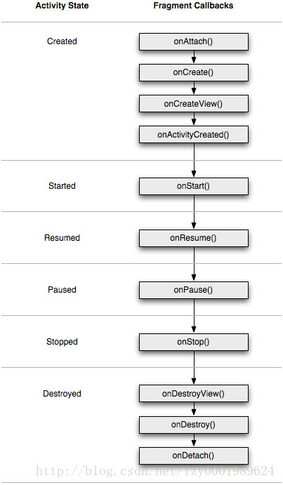

注意:
android3.0以及之后的版本支持fragment技术，低版本要想使用fragment技术需要android.support.v4.app包
获取fragmentManager的方法不同：
3.0以下：getSupportFragmentManager()
3.0以上：getFragmentManager()
fragment以及activity生命周期
附上图片一张:

学习fragment时碰到的几个名词：
FragmentActivity：
一个android.support.v4.app中的一个继承了Activity的类，如果你要在3.0以下使用fragment就需要让页面继承FragmentActivity而不是Activity，FragmentActivity中包含了3.0以下操作fragment的方法，使用方法同3.0以上一样，只是获取Manager的方法不同
FragmentPagerAdapter
可以作为ViewPager的适配器
ListFragment
列表样式， 自带一个默认的包含ListView控件的布局文件，无需手动重写onCreateView()使用inflat()方法加载自定义布局文件，只需要重写onCreate()方法，在其中用setListAdapter()方法绑定适配器，在绑定适配器的时候给item设置一个布局文件就行了。
若想修改ListView，可以在onCreateView(LayoutInflater, ViewGroup, Bundle)中进行修改，需要注意在自定义的ListFragment对应的布局文件中，必须指定一个 android:id 为 “@android:id/list” 的ListView控件!
当然，用户也可以在ListFragment对应的布局中包含其它的控件。
显示：在主activity中使用new关键字获取对象的引用
DialogFragment
Android官方推荐使用DialogFragment创建对话框，可以避免屏幕旋转导致的问题。
重写onCreateView()则用定义的xml布局文件展示Dialog或者重写onCreateDialog()则需要利用AlertDialog或者Dialog创建出Dialog，在主activity中使用DialogFragment对象的show()方法，显示对话框。
显示：在主activity中使用new关键字获取对象的引用
FragmentTabHost
用来代替已废弃的TabHost，个人感觉和前两个ListFragment以及DialogFragment有些不同，你可以把FragmentTabHost看作是一个普通控件正常使用，也就是个TabHost使用方法一样。
需要主页面的布局文件中添加控件，然后通过findViewById()来获取控件，需要注意的是布局文件中控件使用的标记名称是<android.support.v4.app.FragmentTabHost>，id：@android:id/tabhost(id可以随便写)
需要包含三个子标记(经过测试，只用一个id：tabhost(也就是上面那个控件)和一个id：realtabconten也可以(真正的容器FrameLayout)：
1、Tab标签容器TabWidget，id：@android:id/tabs(id必须是这个)
2、Tab内容容器FrameLayout，id：@android:id/tabcontent(id必须是这个)，注意：这里属性中宽高皆为0dp
3、Tab内容容器FrameLayout，id：@+id/RealTabContent(id可以随便写)，注意：这个才是真正的内容容器
FragmentTabHost可以在布局文件中定义标签容器在内容容器的下面，调动RealTabContent的位置到tabhost的上面就行了，此时RealTabContent的属性最好是：
1 | android:id="@+id/RealTabContent" |
相关链接：《关于FragmentTabHost中TabWidget不能移到屏幕下面的Bug》
然后，在主activity中使用findViewById()获取控件后，必须先使用使用控件对象的setup()方法之后才能用addTab()方法来添加标签，这点和TabHost一样，不过使用的具体方法有区别，FragmentTabHost应该用：
1 | //setup(): |
详细的FragmentHostTab与HostTab之间的区别请看：TabHost 和 FragmentTabHost
笼统的Fragment的使用：
只是单纯的Fragment，不含：ListFragment，DialogFragment，FragmentTabHost等，不过基本一样
fragment继承类和其布局文件
一个fragment由一个布局文件和一个继承了fragment的子类组成，由这个子类处理布局文件产生的的各种事件
使用时需要让子类关联到其布局文件，关联方法：
1、重写fragment类的onCreateView()生命周期方法，
2、然后在onCreateView()中调用方法的传入参数inflater的inflate()方法并返回获得的View对象来加载对应的布局文件
当fragment继承类和其布局文件关联后就可以显示到页面上了，显示方法：
注意：并不是直接把fragment的布局文件或其中的控件显示到页面上
而是在主页面的布局文件中使用fragment标记，要注意标记的android:name属性，由这个属性的值关联到fragment继承类，进而通过fragment继承类加载到相应的fragment布局文件
具体显示到页面上有两种方式：
静态
也就是直接把一个或多个fragment显示到页面上，这样做就相当与把一个fragment看作是一个普通控件(由一个或多个控件组成的控件)来添加到页面上
只不过这个“控件“(fragment)产生的事件由对应的继承了fragment的类处理，
而不是像平时那样在主页面中为某个控件findViewById然后添加监听器，这一步写在了继承了fragment的类中
具体步骤：
1、fragment的布局文件，就像平时的布局文件一样
2、继承了fragment的类，重写fragment类的onCreateView()生命周期方法，
在onCreateView()中调用方法的传入参数inflater的inflate()方法并返回获得的View对象来加载对应的布局文件
3、主页面布局文件中依次写入需要显示的fragment标记，通过标记的name属性关联到继承了fragment的类
动态
动态的意思就是可以在不切换activity的前提下，通过某个点击事件，在同一个区域显示不同的fragment
要实现这个效果，需要一个FragmentManager管理类和一个FragmentTransaction事务类，还需要一个承载不同fragment的容器，一般是在主页面中使用一个FrameLayout帧布局来充当这个容器，
也就是让一个个fragment在FrameLayout中显示，但不需要在FrameLayout内写fragment子标记
如何切换不同的fragment的方法由事务类操作实现
具体步骤：
前两步与静态一样，写几个fragment的布局文件和类并一一对应的关联起来
3、在主页面的布局文件中，需要动态显示fragment的地方，放一个FrameLayout帧布局
4、在主页面的activity类中，通过getFragmentManager()方法获取到FragmentManager
并通过FragmentManager的beginTransaction()开始并获取到一个事务FragmentTransaction
5、通过获取到的FragmentTransaction对象的就可以控制fragment显示显示或隐藏到FrameLayout帧布局
部分控制方法有：
add(),hide(),remove(),replace(),show()等，这些方法都需要fragment对象，也就是要显示的fragment
通过addToBackStack()方法可以将当前fragment添加到FragmentManager的回退栈，当点击返回键时可以恢复状态
当操作完成后还必须使用commit()方法提交，提交之后才会真正生效
总结：
个人表示刚接触fragment，不容易懂或者说不容易记的地方是fragment的类和对应的布局文件的关联，以及如何显示到页面
大概记忆顺序(中间的连接符可以理解为关联、对应)：
静态：一个主页面布局文件中的<fragment>标记——一个fragment的继承类——一个fragment布局文件
动态：一个主页面布局文件中的<FrameLayout>标记——承载多个fragment的继承类——各自对应的多个fragment布局文件虽然理解时的顺序是这样的，但实际写代码的时候的顺序确实反过来的